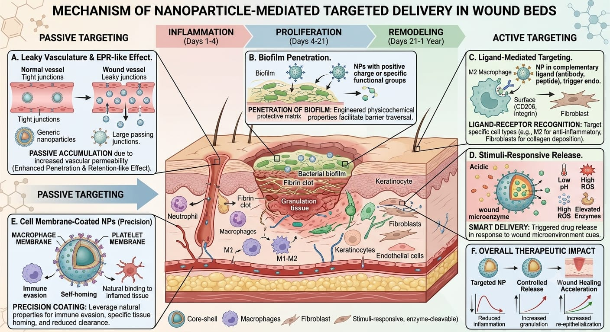

Traditional wound care therapies, including topically applied antibiotics and recombinant growth factors, frequently fail due to rapid degradation by proteolytic enzymes within the hostile wound microenvironment. Nanotechnology has emerged as a transformative solution to this delivery crisis. By engineering materials at the nanoscale (1 to 100 nanometers), scientists can encapsulate fragile therapeutic agents, protecting them from enzymatic destruction while ensuring deep, targeted tissue penetration.

As illustrated in Fig x, nanocarriers such as liposomes and polymeric nanoparticles act as protective molecular trojan horses. Because their microscopic size allows them to easily bypass the stratum corneum and cellular membranes, they can deliver payloads directly into the cytoplasm of target cells. Furthermore, the surface of these nanoparticles can be functionalized with specific ligands, ensuring they only bind to and release their payload at the site of active inflammation, thereby minimizing systemic toxicity and maximizing localized therapeutic efficacy.
Beyond protecting growth factors, nanotechnology has revolutionized the antimicrobial management of severe burn wounds. The rise of multidrug-resistant pathogens has rendered many traditional antibiotics obsolete. In response, metallic nanosystems, particularly silver and zinc oxide nanoparticles, have been heavily integrated into modern hydrogel dressings. The table below outlines the primary nanocarriers currently utilized in advanced wound care delivery.
| Nanocarrier Type | Biological Composition | Mechanism of Action | Clinical Application |
|---|---|---|---|
| Liposomes | Spherical phospholipid bilayer vesicles. | Fuses directly with cell membranes to deliver both hydrophilic and hydrophobic drugs. | Delivery of fragile growth factors (VEGF, EGF) to ischemic diabetic ulcers. |
| Silver Nanoparticles (AgNPs) | Synthesized metallic silver engineered at the nanoscale. | Punctures bacterial cell walls and binds to pathogenic DNA, preventing replication. | Highly potent antimicrobial dressings for infected third-degree burns. |
| Polymeric Nanoparticles | Biodegradable polymers (e.g., PLGA, Chitosan). | Undergoes slow, sustained matrix degradation for controlled release over weeks. | Long-term, sustained delivery of anti-inflammatory cytokines to chronic wounds. |
The integration of these advanced nanocarriers into bioengineered dermal scaffolds represents the pinnacle of current reconstructive medicine. By combining the physical structural support of an Acellular Dermal Matrix with the targeted, sustained biochemical delivery of nanoparticle-encapsulated growth factors and antimicrobials, clinicians can effectively program the wound microenvironment. This bio-instructive approach significantly accelerates neovascularization, drastically reduces the risk of invasive sepsis, and paves the way for true, scarless tissue regeneration.